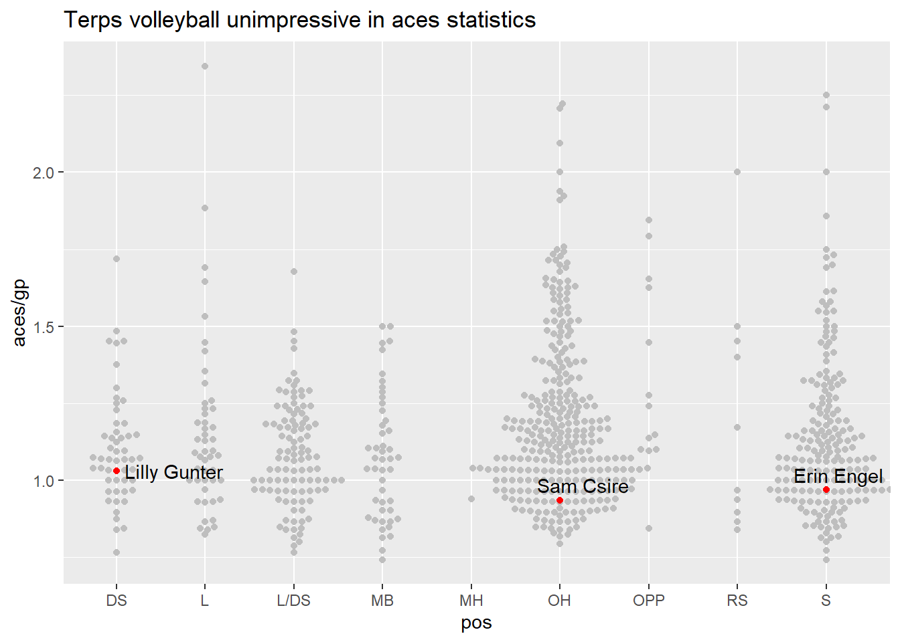

Code
suppressPackageStartupMessages(library(tidyverse)) Warning: package 'tidyverse' was built under R version 4.3.3Warning: package 'ggplot2' was built under R version 4.3.3Code
suppressPackageStartupMessages(library(janitor))
suppressPackageStartupMessages(library(ggbeeswarm))Warning: package 'ggbeeswarm' was built under R version 4.3.3Code
suppressPackageStartupMessages(library(ggrepel))Warning: package 'ggrepel' was built under R version 4.3.3Code
set.seed(1234)
suppressMessages(players <- read_csv("https://raw.githubusercontent.com/dwillis/NCAAWomensVolleyballData/main/data/ncaa_womens_volleyball_playerstats_2023.csv") |> clean_names())
activeplayers <- players |> filter(mp>20) |> filter(pos != "NA")
activeplayers |>
group_by(last_name) |>
summarise(
acespermatch = aces/gp
)Warning: Returning more (or less) than 1 row per `summarise()` group was deprecated in
dplyr 1.1.0.
ℹ Please use `reframe()` instead.
ℹ When switching from `summarise()` to `reframe()`, remember that `reframe()`
always returns an ungrouped data frame and adjust accordingly.`summarise()` has grouped output by 'last_name'. You can override using the
`.groups` argument.# A tibble: 3,223 × 2
# Groups: last_name [2,501]
last_name acespermatch
<chr> <dbl>
1 Abel 0
2 Abner 0.32
3 Abraham 0.818
4 Abramovich 0.913
5 Abutbul 0
6 Achtzehn 0.0938
7 Ackerman 0.435
8 Adam 0
9 Adams 0.233
10 Adams 1.07
# ℹ 3,213 more rowsCode
summary(activeplayers$aces) Min. 1st Qu. Median Mean 3rd Qu. Max.
0.00 4.00 15.00 15.82 25.00 73.00 Code
active <- activeplayers |> filter(aces > 25)
umd <- activeplayers |>
filter(team == "Maryland Terrapins, Terps") |>
filter(aces > 25) |>
arrange(desc(aces/gp))
ggplot() +
geom_beeswarm(
data=active,
groupOnX=TRUE,
aes(x=pos, y=aces/gp), color="grey") +
geom_beeswarm(
data=umd,
groupOnX=TRUE,
aes(x=pos, y=aces/gp), color="red") +
geom_text_repel(
data=umd,
aes(x=pos, y=aces/gp, label=full_name)) +
labs(
title = "Terps volleyball unimpressive in aces statistics"
)Warning: The `groupOnX` argument of `geom_beeswarm()` is deprecated as of ggbeeswarm
0.7.1.
ℹ ggplot2 now handles this case automatically.